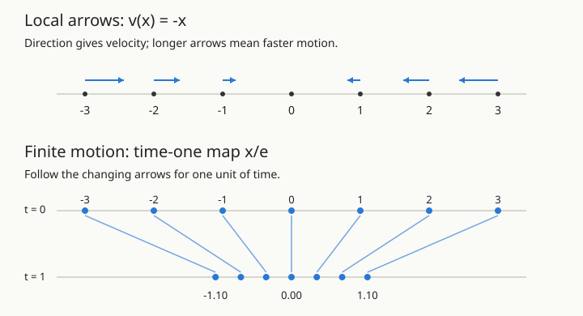

From Local Arrows to Score-Based Diffusion
The geometric introduction: vector fields, ODEs, flows, scores, and sampling. You need derivatives, Gaussian distributions, and the idea of an expectation. No previous stochastic calculus is assumed.
How to use these three notes. Start with Sections 1–8 here for fields, flows, and the difference between ascent and sampling. Then read Sampling with Scores for the worked Gaussian samplers and probability flows. Use Tweedie’s Formula for the statistical proof behind score estimation. The remaining sections here provide a geometric overview and a two-mode example; they can also be read as a self-contained route.
Imagine drawing an arrow at every possible image. The arrow has one component for every pixel value. It says how to change the image by a small amount. If we keep following the arrows, can a random image become a sample from a collection of real images?
That question has two parts. First, how do local arrows produce motion and a global transformation? Second, which arrows move an entire distribution in the right way? ODEs answer the first question. Scores and diffusion answer the second. We will build both answers in one dimension, where we can see everything.
The route is
\[ \text{vector field}\ \longrightarrow\ \text{ODE and flow} \ \longrightarrow\ \text{score}\ \longrightarrow\ \text{SDE sampler} \ \longrightarrow\ \text{probability-flow ODE}. \]
Open the Score and Flow Lab alongside this note. Its first three experiments follow that order; the fourth explores Tweedie denoising. All scores in the lab are known analytically; no neural network is needed to isolate the mathematics.
1. A vector field attaches a velocity to each position
On a line, a vector is a signed number: its sign gives direction and its magnitude gives speed. A vector field is a function \(v:\mathbb R\to\mathbb R\) assigning one such vector to every position.
For \(v(x)=-x\), the arrow at \(2\) points left with speed \(2\), the arrow at \(-3\) points right with speed \(3\), and the arrow at \(0\) has zero length. The arrows are already there, whether or not a particle is present. A field is a rule on space; a trajectory is what happens to one particle following that rule.
In \(d\) dimensions, \(v:\mathbb R^d\to\mathbb R^d\). For example, \(v(x,y)=(-x,-y)\) points toward the origin, whereas \(v(x,y)=(-y,x)\) points around the origin. A field need not point toward a destination, and need not be the gradient of any scalar function. The rotation field will keep moving a particle around a circle.
We will also need fields \(v(x,t)\) whose arrows change with time, even at a fixed position. Think of wind that changes throughout the day.
2. An ODE tells a particle to follow the field
Place a particle at \(x(0)=x_0\). Its motion is specified by the initial-value problem
\[ \boxed{\frac{dx(t)}{dt}=v(x(t),t),\qquad x(0)=x_0.} \]
The derivative is velocity. The right side evaluates the arrow at the particle’s current location and current time. Over a short interval \(h\),
\[x(t+h)\approx x(t)+h\,v(x(t),t).\]
Read the arrow, move a little, then read the new arrow. The particle does not need to know where it will eventually arrive.
Constant motion
If \(v(x)=2\), then \(\dot x=2\) and
\[x(t)=x_0+2t.\]
Every particle moves right at the same speed. The distance between any two particles stays constant.
Motion toward the origin
If \(v(x)=-x\), then \(\dot x=-x\). For a nonzero solution, separation gives
\[\frac{dx}{x}=-dt,\qquad \log|x|=-t+C,\]
so \(x(t)=x_0e^{-t}\). The solution \(x(t)\equiv0\), excluded when dividing by \(x\), also satisfies the equation. Thus for every starting point,
\[\boxed{x(t)=x_0e^{-t}.}\]
A particle starting at \(5\) is at approximately \(1.84\) after one time unit, \(0.68\) after two, and \(0.25\) after three. It approaches zero without reaching it at any finite time. A negative starting point approaches zero from the other side.
Motion around the origin
For \(\dot x=-y\) and \(\dot y=x\),
\[ \begin{pmatrix}x(t)\\y(t)\end{pmatrix} =\begin{pmatrix}\cos t&-\sin t\\\sin t&\cos t\end{pmatrix} \begin{pmatrix}x_0\\y_0\end{pmatrix}. \]
The radius stays constant. Local arrows can therefore create translation, contraction, rotation, or much more complicated motion.
3. The flow collects all the trajectories into a map
For each starting point, solve the ODE. Holding the elapsed time fixed gives a map
\[\boxed{\Psi_{0 \to t}(x_0)=x(t).}\]
We use \(\Psi\) for flow maps, reserving \(\Phi\) for the Gaussian CDF used elsewhere in the course. For contraction, \(\Psi_{0 \to t}(x)=e^{-t}x\). At time zero the map is the identity; at time one it shrinks the line by \(e^{-1}\).

For an autonomous field \(v(x)\), unique solutions satisfy
\[\Psi_{0 \to t+s}=\Psi_{0 \to t}\circ\Psi_{0 \to s},\]
whenever the solutions exist for the times involved. Evolving for \(s\) and then for \(t\) is the same as evolving for \(s+t\).
For a time-dependent field, the starting clock time matters. Write \(\Psi_{s \to t}(x)\) for the position at time \(t\) of a particle placed at \(x\) at time \(s\). The correct composition law is
\[\boxed{\Psi_{s \to t}=\Psi_{r \to t}\circ\Psi_{s \to r}.}\]
Here \(r\) is an intermediate clock time between \(s\) and \(t\).
For instance, \(\dot x=t\) gives \(\Psi_{s \to t}(x)=x+(t^2-s^2)/2\). Restarting the clock at zero would give a different motion. Diffusion samplers use these time-dependent flows.
Continuity in time and local Lipschitz continuity in position give local existence and uniqueness. Global existence needs additional control, such as linear growth; \(\dot x=x^2\) can blow up in finite time. Under suitable regularity, finite-time flow maps are invertible where both forward and backward solutions exist. Even the contraction \(e^{-t}x\) is invertible at every finite \(t\); collapse to a point occurs only in the limit \(t\to\infty\).
4. Euler’s method turns arrows into a computation
When an exact solution is unavailable, choose a step size \(h>0\) and use
\[\boxed{x_{k+1}=x_k+h\,v(x_k,t_k),\qquad t_{k+1}=t_k+h.}\]
This is explicit Euler: freeze the current arrow for one step. For \(v(x)=-x\), the update is \(x_{k+1}=(1-h)x_k\). Compare it with the exact multiplier \(e^{-h}\):
| Step size | Euler’s behavior for \(\dot x=-x\) |
|---|---|
| \(0<h<1\) | Approaches zero from the same side |
| \(h=1\) | Jumps to zero in one step |
| \(1<h<2\) | Alternates sides while shrinking |
| \(h=2\) | Alternates sides without shrinking |
| \(h>2\) | Magnitude grows |
Overshooting here is a numerical artifact, not a property of the ODE. For the rotation field, Euler multiplies the radius by \(\sqrt{1+h^2}\) each step and spirals outward, even though the exact solution stays on a circle.
Lab 1 — fields and flows. Choose contraction, translation, or rotation. Compare the exact path with Euler’s path. Increase the step size for contraction past \(1\) and then past \(2\). Before looking, predict what changes.
5. Move a cloud, and you move a distribution
Now choose the starting point randomly: \(X_0\sim p_0\). Applying the same flow to every particle gives \(X_t=\Psi_{0 \to t}(X_0)\). The randomness comes from the starting point; conditional on that point, an ODE trajectory is deterministic.
For contraction, if \(X_0\sim\mathcal N(0,1)\), then
\[X_t=e^{-t}X_0\sim\mathcal N(0,e^{-2t}).\]
The whole distribution narrows. In one dimension, conservation of probability gives the change-of-variables relation
\[p_t(\Psi_{0 \to t}(x))\,|\Psi_{0 \to t}'(x)|=p_0(x).\]
Contraction makes intervals shorter, so their density must become taller to keep the same probability mass. A generative model must control this movement of mass, not merely make each individual particle look more probable.
That observation is our bridge to scores.
6. Why a score is a natural vector field
Let \(p(x)>0\) be a differentiable density. Its data-space score is
\[\boxed{s(x)=\nabla_x\log p(x)=\frac{\nabla_xp(x)}{p(x)}.}\]
The derivative is with respect to the sample coordinates \(x\), holding any model parameters fixed. In statistics, “score” often means \(\nabla_\theta\log p_\theta(x)\), a parameter gradient. Here it means the gradient of the log density in data space. Calling it a log-likelihood gradient is only unambiguous after specifying this differentiation variable.
Here are four reasons this is a useful field, followed by a Gaussian example.
It gives one component for each direction of motion
In \(d\) dimensions,
\[s(x)=\left(\frac{\partial\log p}{\partial x_1},\ldots, \frac{\partial\log p}{\partial x_d}\right)\in\mathbb R^d.\]
Its input and output dimensions match. This already makes it a vector field. Where it is sufficiently regular, it can serve as an ODE velocity.
It measures local relative changes in density
For a small displacement \(\delta\),
\[\log\frac{p(x+\delta)}{p(x)}=s(x)^\top\delta+o(\|\delta\|).\]
Among unit directions, the score direction maximizes the first-order increase in log density, when the score is nonzero. This is Euclidean geometry: “steepest” depends on the coordinates and metric. The score describes a local density change, not the probability of an individual point or the location of the nearest training example.
The unknown normalizing constant disappears
If \(p(x)=\widetilde p(x)/Z\) with \(Z\) independent of \(x\), then
\[\nabla_x\log p(x)=\nabla_x\log\widetilde p(x).\]
For an energy model \(p(x)\propto e^{-E(x)}\), the score is \(-\nabla E(x)\). This connects to Sampling What You Cannot Normalise. Unlike \(\nabla p\), the score is unchanged when the density is multiplied by an unknown positive constant.
It is precisely what converts diffusion into probability transport
The identity \(p\,s=\nabla p\) will allow us to rewrite the diffusion term in a density evolution equation as a probability current. This is the mathematical reason the score appears in the sampler. Being an uphill direction alone would not determine the correct sampling dynamics.
The Gaussian example connects to our first ODE
For \(p=\mathcal N(\mu,\varrho^2)\),
\[\log p(x)=C-\frac{(x-\mu)^2}{2\varrho^2},\qquad \boxed{s(x)=-\frac{x-\mu}{\varrho^2}.}\]
For a standard Gaussian, \(s(x)=-x\): exactly our contraction field. In several dimensions, a Gaussian with positive-definite covariance \(\Sigma\) has score \(-\Sigma^{-1}(x-\mu)\). Narrow directions have stronger restoring arrows.
7. Following the score uphill is not yet sampling
Consider the ODE \(dx/du=s(x)=-x\) for the standard Gaussian. Even if the initial cloud already has the correct law \(\mathcal N(0,1)\), its variance becomes \(e^{-2u}\) and eventually approaches zero. The particles concentrate at the mode. They do not keep sampling the Gaussian.
More generally, along score ascent,
\[\frac{d}{du}\log p(x(u))=\|s(x(u))\|^2\geq0.\]
This is an optimization behavior. A distribution needs appropriate spread as well as high-density locations. In high dimensions, much of the probability mass can lie far from the density’s maximizer.
To maintain the spread for a fixed target, add calibrated random motion:
\[\boxed{dX_u=s(X_u)\,du+\sqrt2\,dW_u.}\]
This is overdamped Langevin dynamics. The clock \(u\) is sampling time for a fixed target, not a diffusion noise level. Under suitable conditions, \(p\) is invariant and the dynamics converge to it from other starting distributions. Invariance alone does not guarantee fast mixing between separated modes.
For the standard Gaussian, the variance \(V(u)\) satisfies
\[\frac{dV}{du}=-2V+2,\qquad V(u)=1+(V(0)-1)e^{-2u}.\]
Contraction removes spread; the Brownian term restores it. Their balance selects variance one. With the noise omitted, only the first term remains.
8. Euler–Maruyama: an arrow plus a random kick
Brownian motion has independent increments with
\[W_{t+h}-W_t\sim\mathcal N(0,hI).\]
An SDE \(dX_t=f(X_t,t)dt+g(t)dW_t\) can therefore be approximated by
\[\boxed{X_{k+1}=X_k+h\,f(X_k,t_k)+g(t_k)\sqrt h\,z_k, \qquad z_k\overset{\mathrm{iid}}\sim\mathcal N(0,I).}\]
This is Euler–Maruyama. The deterministic displacement scales as \(h\); the random displacement scales as \(\sqrt h\). Using \(hz_k\) instead would give vanishing accumulated noise variance as the mesh is refined.
For Langevin sampling, the update becomes
\[X_{k+1}=X_k+h\,s(X_k)+\sqrt{2h}\,z_k.\]
Even a perfect score does not eliminate discretization error. For the standard Gaussian and \(0<h<2\), this discrete chain has stationary variance
\[V_h=(1-h)^2V_h+2h \quad\Longrightarrow\quad \boxed{V_h=\frac{1}{1-h/2}.}\]
It is too large at a finite step size. As \(h\to0\), it approaches one.
Lab 2 — ascent versus sampling. Both clouds start from the same standard Gaussian particles. One follows score ascent; the other uses Euler–Maruyama for Langevin dynamics. Watch their histograms and variances. Increase \(h\) and compare the Langevin cloud with the discrete stationary variance above.
The density \(q_u\) of Langevin particles obeys \(\partial_u q=-\nabla\cdot(qs)+\Delta q\). At \(q=p\), the identity \(ps=\nabla p\) makes the right side zero. Here \(\nabla\cdot\) is divergence, or net outward flow, and \(\Delta\) is the sum of second spatial derivatives. Suitable boundary or tail conditions ensure that probability does not leak away.
9. Diffusion supplies a whole family of easier densities
Directly learning and sampling a complicated data density is difficult. Instead, choose a forward noising process
\[\boxed{dX_t=f(X_t,t)\,dt+g(t)\,dW_t,\qquad X_0\sim p_{\rm data}.}\]
We restrict attention to a scalar diffusion coefficient \(g(t)\) shared by all coordinates and independent of position. Position-dependent diffusion requires additional terms in the formulas below.
The process defines marginal densities \(p_t\) and their scores
\[s_t(x)=\nabla_x\log p_t(x).\]
At each time, the score belongs to the density of all noisy data, not to the Gaussian corruption of a single training example. With Gaussian corruption and positive noise, even discrete data produce a smooth, positive density.
An especially simple variance-preserving example is
\[dX_t=-\tfrac12\beta(t)X_t\,dt+\sqrt{\beta(t)}\,dW_t,\]
with \(f(x,t)=-\tfrac12\beta(t)x\) and \(g(t)=\sqrt{\beta(t)}\). Its coefficients are
\[\alpha_t=\exp\!\left(-\tfrac12\int_0^t\beta(s)\,ds\right), \qquad \sigma_t^2=1-\alpha_t^2.\]
We now choose \(\beta(t)\equiv1\) to keep the first calculations transparent:
\[dX_t=-\tfrac12X_t\,dt+dW_t.\]
At a fixed time its conditional law can be sampled as
\[X_t\overset d=\alpha_tX_0+\sigma_t\varepsilon, \qquad \alpha_t=e^{-t/2},\quad \sigma_t^2=1-e^{-t}, \quad\varepsilon\sim\mathcal N(0,I),\quad\varepsilon\perp X_0.\]
The signal fades as noise grows. As \(t\to\infty\), the law approaches \(\mathcal N(0,I)\). At a finite terminal time \(T\), replacing \(p_T\) by that Gaussian is an approximation. The fixed-time identity above does not describe an entire Brownian trajectory using a single fixed \(\varepsilon\).
10. Reverse the diffusion using the score
We have a path \(p_0\to p_t\to p_T\). Generation starts at the noisy end and follows the path back. Use the increasing reverse clock \(\tau=T-t\), exactly as in The Probability-Flow ODE. In reverse-clock formulas, \(X\) denotes the current sampler state and \(t=T-\tau\) its noise level.
The time-reversal theorem, under appropriate smoothness and nondegeneracy conditions, gives
\[\boxed{ dX=\left[-f(X,t)+g(t)^2s_t(X)\right]d\tau +g(t)\,d\bar W_\tau,\qquad t=T-\tau. }\]
Here \(\bar W_\tau\) is Brownian motion in the increasing reverse clock. The reverse drift contains both the reversed forward drift and a score correction. The random kicks remain. This theorem and its use in score-based generation are presented in Song et al., §§3–4.
Why should the score enter? A noisy point can have many possible predecessors. Bayes’ rule favors predecessor regions with more prior probability mass. For a small step, the local log-density gradient supplies the leading correction to simply reversing the drift. The full theorem makes that heuristic precise.
For computation, use the detailed note’s descending grid
\[T=t_N>t_{N-1}>\cdots>t_0=\epsilon,\qquad h_k=t_{k-1}-t_k<0.\]
The index now counts down, \(k=N,N-1,\ldots,1\), as the noise level decreases. The positive reverse-clock increment is \(|h_k|\). Euler–Maruyama gives
\[\boxed{ X\leftarrow X+h_k\left[f(X,t_k)-g(t_k)^2s_{t_k}(X)\right] +g(t_k)\sqrt{|h_k|}\,z_k, \qquad z_k\overset{\mathrm{iid}}\sim\mathcal N(0,I). }\]
Evaluate everything at the current state and time, then move to \(t_{k-1}\). The noise variance uses \(|h_k|\), never a negative time increment. The lab displays this positive step magnitude as \(h=|h_k|\); it is the same update in that display convention. With smooth data we may take \(\epsilon=0\); for singular data we usually stop at positive \(\epsilon\).
Fixed-target Langevin dynamics and reverse diffusion both use scores, but solve different problems. Langevin seeks equilibrium at one fixed density. Reverse diffusion tracks a prescribed, changing density \(p_t\) with a drift and noise scale determined by the forward process.
11. A deterministic flow can follow the same density path
The surprising next step is that we can transport the same marginals without injecting fresh noise along each trajectory. The coefficient of the score must change when we do this.
The forward SDE density satisfies the Fokker–Planck equation
\[\partial_t p_t=-\nabla\cdot(f p_t)+\tfrac12g(t)^2\Delta p_t.\]
Read this as conservation of probability. Drift carries mass; diffusion spreads it. Since \(\Delta p_t=\nabla\cdot(p_t s_t)\), we can collect the two terms:
\[ \partial_t p_t =-\nabla\cdot\left[p_t\left(f-\tfrac12g(t)^2s_t\right)\right]. \]
But the density of particles following an ODE \(\dot x=v(x,t)\) satisfies the continuity equation \(\partial_t p=-\nabla\cdot(pv)\). Therefore choose
\[\boxed{v(x,t)=f(x,t)-\tfrac12g(t)^2s_t(x).}\]
This gives the probability-flow ODE
\[\boxed{\frac{dX_t}{dt}=f(X_t,t)-\tfrac12g(t)^2s_t(X_t).}\]
Given the exact score, matching initial law, and conditions ensuring well-posed dynamics, it has the same one-time marginals \(p_t\) as the forward SDE. In more than one dimension, other velocity fields can transport the same density path; this construction supplies a particular one.
For generation, integrate from \(T\) downward. In the increasing reverse clock,
\[\frac{dX}{d\tau}=-f(X,t)+\tfrac12g(t)^2s_t(X),\qquad t=T-\tau.\]
On the same descending grid, the Euler sampler is
\[\boxed{X\leftarrow X+h_k\,v(X,t_k) =X+h_k\left[f(X,t_k)-\tfrac12g(t_k)^2s_{t_k}(X)\right].}\]
| Sampler, with \(h_k<0\) | Deterministic increment | Fresh noise |
|---|---|---|
| Reverse SDE | \(h_k(f-g^2s_t)\) | \(g\sqrt{|h_k|}\,z_k\) |
| Probability-flow ODE | \(h_k(f-\tfrac12g^2s_t)\) | None |
Removing noise from the reverse SDE without halving its score term does not give the probability-flow ODE. The reverse SDE needs a stronger concentration drift because its Brownian term is still spreading particles.
There is a useful sanity check. If the forward process \(dX=-X\,dt/2+dW\) already has \(p_t=\mathcal N(0,1)\), then \(s_t=-x\) and the probability-flow velocity is \(-x/2-(-x)/2=0\). Every probability-flow ODE particle stays put, whereas the score-ascent ODE of Section 7 contracts toward zero. The SDE particles keep moving, yet the cloud has the same Gaussian law. Same marginals do not mean same paths or the same joint distribution across times.
12. A complete example with two modes and no learned quantities
Use a smooth data distribution so that the score remains finite even at \(t=0\):
\[p_0=\tfrac12\mathcal N(-m,a^2)+\tfrac12\mathcal N(m,a^2), \qquad m=2,\quad a=0.35.\]
Under \(dX_t=-X_t\,dt/2+dW_t\), each component stays Gaussian. Set
\[b_t=e^{-t/2}m,\qquad q_t=e^{-t}a^2+1-e^{-t}.\]
Then
\[p_t(x)=\tfrac12\mathcal N(x;-b_t,q_t)+\tfrac12\mathcal N(x;b_t,q_t).\]
To compute its score, let \(w_+(x,t)\) be the posterior probability of the positive component. Differentiating the mixture gives a posterior-weighted average of component scores:
\[s_t(x)=w_+(x,t)\frac{b_t-x}{q_t} +(1-w_+(x,t))\frac{-b_t-x}{q_t}.\]
The log odds of the positive component are \(2b_tx/q_t\), so \(2w_+-1=\tanh(b_tx/q_t)\). Hence
\[\boxed{s_t(x)=\frac{b_t\tanh(b_tx/q_t)-x}{q_t}.}\]
At high noise, this field is nearly \(-x\). At low noise, it points toward the two high-density regions. The midpoint has score zero by symmetry even when it lies in a density valley. Zero score does not necessarily mean a mode.
For this example, the generation updates simplify to
\[ \begin{aligned} \text{SDE:}\quad X&\leftarrow X+|h_k|\left(\tfrac12X+s_{t_k}(X)\right)+\sqrt{|h_k|}\,z_k,\\ \text{ODE:}\quad X&\leftarrow X+|h_k|\left(\tfrac12X+\tfrac12s_{t_k}(X)\right). \end{aligned} \]
Lab 3 — two routes through the same distributions. Both samplers start from the same particles at \(T=8\). The default initialization samples the exact mixture \(p_T\), separating discretization error from initialization error. A second option starts from \(\mathcal N(0,1)\), as in a practical model. Scrub the generation clock to see paths, histograms, the analytic \(p_t\), and the current score arrows.
Predict what you will see before changing the controls:
- ODE paths are smooth; SDE paths remain irregular.
- Both histograms approach the two-mode target as the step size is refined.
- A particle’s SDE and ODE endpoints need not match, even from the same start.
- At a finite step size and finite particle count, neither histogram exactly equals the analytic curve.
In one dimension, unique exact ODE solutions preserve particle order. The mass splits into two regions without crossing trajectories. A particle starting exactly at zero stays there by symmetry, but a continuous initial distribution assigns that single point probability zero.
The lab’s numerical core exposes the exact mixture density and score, and the three simulation routines, without external libraries. A small standalone Python sampler is available in the companion script.
13. How a neural network supplies the missing field
Real data do not come with the analytic mixture score. They do come with samples \(x_0\). Draw \(x_0\) and a standard Gaussian \(\varepsilon\) independently. Gaussian corruption then creates training pairs without knowing \(p_t\):
\[x_t=\alpha_t x_0+\sigma_t\varepsilon,\qquad \varepsilon\sim\mathcal N(0,I).\]
The score of the conditional corruption density is known:
\[\nabla_{x_t}\log p_t(x_t\mid x_0) =-\frac{x_t-\alpha_t x_0}{\sigma_t^2} =-\frac{\varepsilon}{\sigma_t}.\]
Train a network using denoising score matching:
\[\mathcal L(\theta)=\mathbb E\left[ \lambda(t)\left\|s_\theta(x_t,t)+\frac{\varepsilon}{\sigma_t}\right\|^2 \right],\qquad \lambda(t)>0.\]
Use positive noise levels and weights or a lower cutoff that keep the objective finite. Why does a conditional target learn a marginal score? Squared-error regression fits its target’s conditional mean. At the population optimum,
\[ \begin{aligned} s^\star(x,t) &=\mathbb E[\nabla_x\log p_t(x\mid X_0)\mid X_t=x]\\ &=\frac{\int\nabla_xp_t(x\mid x_0)\,p_0(dx_0)}{p_t(x)} =\nabla_x\log p_t(x), \end{aligned} \]
where differentiation under the integral is justified by suitable regularity. The sampled target varies across examples; the learned field averages the targets compatible with the observed noisy input.
There is also a direct denoising interpretation:
\[\widehat X_0(x,t):=\mathbb E[X_0\mid X_t=x],\qquad \boxed{\sigma_t^2s_t(x)=\alpha_t\widehat X_0(x,t)-x.}\]
The scaled score points from the noisy observation toward the posterior mean of the attenuated clean signal. It does not identify the particular clean example that produced the observation. The standalone Tweedie tutorial proves this identity and its Bayes optimality under squared error. See One Estimator, Many Parameterizations for the relation to noise prediction.
After training, replace \(s_t\) by \(s_\theta\) in either sampler. The network learns the score; the known drift and scaling construct the velocity or reverse drift. A generic network is not guaranteed to be an exact gradient field, and imperfect scores need not make the SDE and ODE share the same marginals. Their equivalence is an exact-score statement.
14. What has actually been learned?
The hierarchy is now concrete. A field assigns local arrows. An ODE integrates those arrows into trajectories. A flow collects the trajectories into a global map. A score describes local relative density change. Diffusion supplies the time-indexed densities whose scores determine a stochastic reverse sampler and a deterministic probability flow.
In standard score-based training, the network does not directly learn an endpoint transport map. It estimates local information from which a numerical solver constructs that map, or a stochastic sampling process.
One terminological refinement: the ODE’s infinitesimal generator is the operator \(\mathcal L_t\varphi=v(\cdot,t)\cdot\nabla\varphi\) acting on test functions. For the forward SDE, it is \(\mathcal L_t\varphi=f\cdot\nabla\varphi+\tfrac12g^2\Delta\varphi\). Calling the network itself “the generator” is informal; learning local score information that determines the dynamics is the precise statement.
For an exact sampling claim we need an exact terminal law, exact scores, and exact integration under appropriate regularity. Practical models approximate all three. Stopping at a small positive time adds an endpoint approximation when the data score is singular at zero. Our smooth-mixture lab avoids that last issue so that the numerical effects remain easy to see.
Questions to work through
- For \(v(x)=-3x\), derive the exact flow and the range of stable Euler step sizes.
- For \(p=\mathcal N(\mu,\varrho^2)\), derive the score and show that \(dX=s(X)du+\sqrt2dW\) has stationary variance \(\varrho^2\).
- Explain why scaling an unnormalized density does not change its score, but multiplying the score by two generally changes a Langevin sampler’s target.
- For pure Brownian noising \(dX=dW\), write both generation updates. Where does the factor of one-half appear?
- In the stationary Gaussian example, remove the random term from the reverse SDE without changing its drift. What happens to the cloud’s variance?
- \(\Psi_{0 \to t}(x)=e^{-3t}x\); Euler is asymptotically stable for \(0<h<2/3\).
- \(s(x)=-(x-\mu)/\varrho^2\); \(V'=-2V/\varrho^2+2\), so \(V=\varrho^2\) at equilibrium.
- A constant vanishes on differentiating its logarithm. With unchanged noise, using \(2s\) instead of \(s\) gives invariant density proportional to \(p^2\), when this is normalizable and the usual conditions hold.
- On the descending grid, SDE: \(X\leftarrow X-h_k s_{t_k}(X)+\sqrt{|h_k|}z_k\); ODE: \(X\leftarrow X-\tfrac12h_k s_{t_k}(X)\), with \(h_k<0\).
- The reverse drift is \(-x/2\). Without noise, \(V(\tau)=e^{-\tau}V(0)\); the correct probability-flow ODE has zero velocity and preserves the variance.
Reading and next steps
- Lai, Song, Kim, Mitsufuji, and Ermon, The Principles of Diffusion Models. In the current text, Chapter 3 develops the score-based perspective, and Chapter 4 develops the score-SDE framework. Read §§3.2–3.3 for scores and denoising, then §§4.1–4.3 for reverse dynamics, matching marginals, and sampling.
- Song et al., Score-Based Generative Modeling through Stochastic Differential Equations, especially §§3.2, 4.1, 4.3 and Appendix D: reverse SDEs, numerical sampling, and probability flow.
- The course’s Probability-Flow ODE draft gives a more detailed treatment after this introduction.